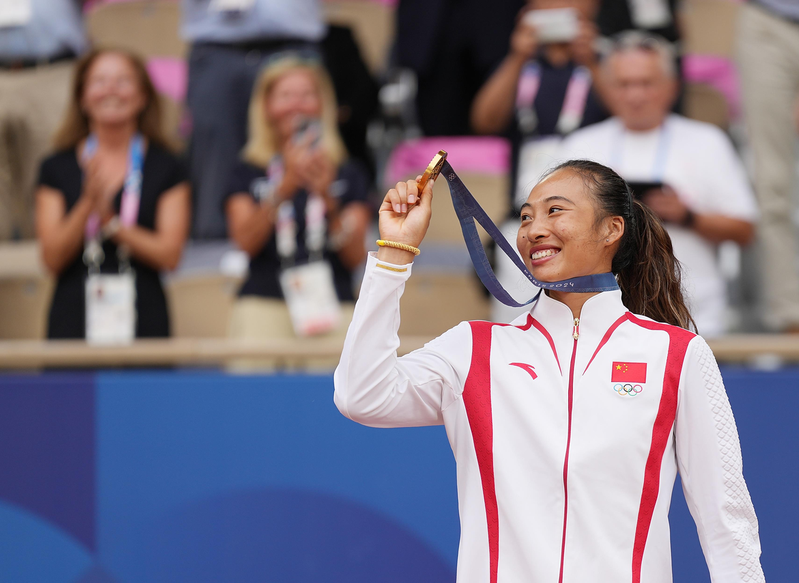

中国选手郑钦文在巴黎奥运网球女单夺金，创造中国乃至亚洲网球历史，带火中国「网球经济」，多地网球场价格瞬间飙涨，但网球场仍是「一场难求」。
8月4日，郑钦文为中国网球队夺得奥运历史上首枚单打金牌。8月3日，张之臻与王欣瑜为中国队拿下了奥运网球混双的首枚银牌。网媒《香港01》指出，接连收获金银两面奖牌，让中国网球迎来前所未有的热潮。有北京网球培训机构在巴黎奥运期间将宣传广告改成了郑钦文的照片，并配文「中国网球过年了！」
《上观新闻》则报导，网球培训机构工作人员介绍，「最近巴黎奥运会，确实迎来了一波咨询小热潮。」不过在郑钦文夺冠前，中国的网球爱好者数量已在近几年间日渐增长。
据国际网球联合会发布的《2021年全球网球报告》，2021年全球参与网球运动的人口有8,718万人，中国以1,992万人成为全球网球参与人数排名第二的国家，仅次于美国，占全球总网球人口的22.9%。同时，中国网球场的数量也为全球第二，达4,9767片。网球教练则以1万1,350人位居全球第五。
美团数据则显示，今年7月以来，「网球」搜索量比去年同期增长逾六成，上海、北京、深圳、成都、广州的消费者搜索网球热度最高，25到35岁之间的消费者占比超五成；同时，网球体验课、网球培训季度课包在平台热销，网球运动相关团购订单量同比增长172%。
随着网球爱好者的增多，场地需求也水涨船高。有中国网球爱好者感叹，「夏天了，白天的室内，晚上的室外，网球场又到难订的时候了。」
以8月2日至8月9日为区间，统计上海的网球场预定情况发现，几乎所有场地、场次均被预定「售罄」。除了上海网球场预约难外，北京网球场早前已纷纷调整价格。
朝阳公园网球中心今年4月已宣布室外场地黄金时段的价格由每小时最低人民币120元统一涨至140元，中心场地黄金时段的价格由每小时最低320元统一涨至360元。不过即使涨价，该球场的可预约时间也几乎全部约满。
朝阳公园网球中心的工作人员介绍，「现在夏天打网球的人很多，我们场地的热门时间段是需要抢的，一般提前三天，早上6点时会开放预订。」
除了北京、上海，广东、湖北等多地网球场出现涨价的情况。例如湖北仙桃的某网球场，年卡价格已从人民币1,580元涨至1,880元等。